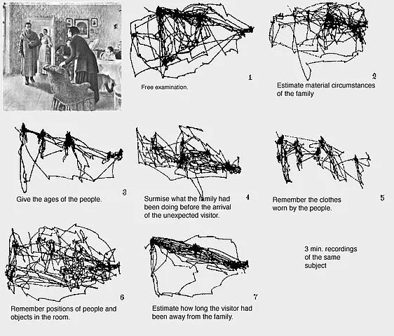
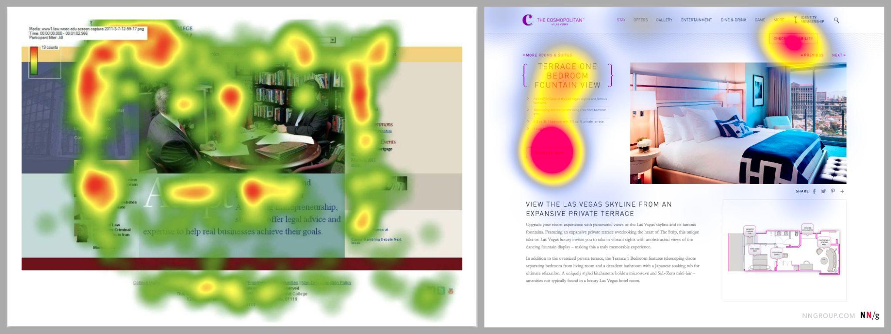

04 — Le cerveau à la recherche d'économie d'énergie
Facteurs intrinsèques, extrinsèques, et charge cognitive
Des facteurs internes et externes influencent ce que nous percevons
Pour construire notre vision du réel, le travail du cerveau dépend de
facteurs intrinsèques (internes à l'individu) tels que nos connaissances,
notre niveau d'éveil, notre état émotionnel ou nos motivations. Un individu
de bonne humeur, par exemple, aura tendance à percevoir les visages d'autrui
comme plus sympathiques (Bower & Forgas, 2000 ; Pessoa, 2009).
L'anxiété et le stress, quant à eux, rendent plus susceptible de détecter ou
de surestimer les signaux de menace dans l'environnement (Bishop, 2009 ;
Mogg & Bradley, 1999).
Que vous travailliez en conception d'interface, sur un document collaboratif
ou un dashboard, gardez à l'esprit qu'un individu ne regarde jamais tout sur
une page (Nielsen, 2006).

Figure 4. Illustration des conditions expérimentales de l'étude de Yarbus
(1967) | Source : Yarbus, A. L. (1967). Eye Movements and
Vision. Plenum Press.
Dans le domaine de la psychologie cognitive, une étude de Yarbus (1967) a
consisté à enregistrer les parcours visuels de participants pendant qu'ils
regardaient le tableau d'une peinture, selon des objectifs différents :
explorer librement, évaluer l'aisance matérielle des personnages, estimer
leur âge, mémoriser leurs vêtements, etc. Les résultats ont montré que les
parcours visuels varient en fonction de l'objectif donné, démontrant
l'influence des intentions cognitives sur les mouvements oculaires.
Puisque le parcours de l'œil dépend de l'objectif de la personne (Poole,
Ball & Phillips, 2005), on pourrait répliquer cette étude sur la
navigation d'une interface : une exploration libre pour donner son avis
sur une page, puis un objectif de recherche d'une information précise.

Figure 5. Cartes de chaleur fictives illustrant à gauche une exploration
visuelle libre et à droite une exploration avec objectif précis | Source :
Gronier, G. Test des 5 secondes.
Au-delà des facteurs intrinsèques, des facteurs extrinsèques
(externes à l'individu) jouent aussi un rôle sur la cognition : le
contexte social (compétition, collaboration, évaluation), le contexte
culturel (pratiques artistiques, conventions visuelles), l'environnement
(couleurs environnantes) ou encore le contexte visuel (une même teinte de
gris peut sembler plus ou moins claire selon le fond sur lequel elle se
trouve ; Gibson, 2014).
Ces facteurs — intrinsèques comme extrinsèques — créent des écarts parfois
importants entre les individus. Vos utilisateurs, collègues ou lecteurs n'ont
pas tous le même niveau d'expertise, de concentration à un instant donné, ni
le même rapport aux contextes sociaux et culturels.
Des différences qui pèsent sur l'expérience vécue
Ces différences inter et intra-individuelles influencent l'effort cognitif
sollicité lors de l'exécution d'une tâche. Fatigué ou stressé, l'effort
demandé sera plus important ; dans un environnement calme et reposant,
il sera moindre. Le cerveau cherche sans cesse à économiser de l'énergie — en
tant que designer ou créateur de document partagé, l'objectif est donc de
minimiser cet effort cognitif pour garantir la meilleure expérience possible
au plus grand nombre.
Sauer, Seibel et Rüttinger (2010) ont mené une étude avec 48 participants
experts et novices dans l'utilisation d'une machine à laver le sol :
les experts signalent davantage de problèmes d'utilisation que les novices,
mais ces derniers les jugent moins graves ou bloquants que ceux signalés par
les novices. D'où l'importance de considérer un maximum de facteurs lors de
recherches utilisateurs.
Pour s'adapter au plus grand nombre, les contenus proposés dans un produit
ou un service devraient s'appuyer sur les connaissances et lois scientifiques
de la psychologie cognitive : des schémas mentaux de traitement sensoriel
communs à une majorité d'individus, qui facilitent la compréhension et
l'assimilation d'informations par le cerveau humain.